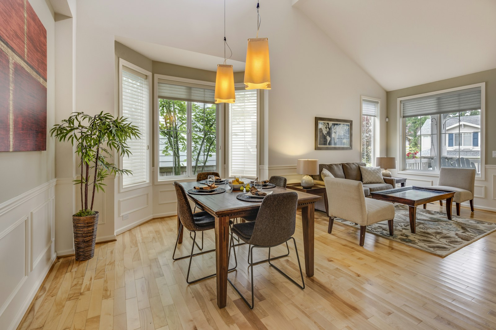

新築・注文住宅
土地探しのご相談から設計・施工まで。家族の暮らしに合わせた家づくりを進めます。

住まいの相談から現場、引き渡し後の小さな修繕まで。地域で長く仕事をしてきた工務店として、無理のない計画と丁寧な施工を大切にしています。
大手ハウスメーカーのように全国一律の仕様ではなく、土地の条件・家族の暮らし・予算のバランスを見ながら、その家に合う進め方を一緒に考えます。小さな修繕のご相談も歓迎です。まずは現地の状況を伺い、無理のない計画からご提案します。
土地探しのご相談から設計・施工まで。家族の暮らしに合わせた家づくりを進めます。

水まわり・内装・間取り変更まで。いまの家を、これからの暮らしに合わせて整えます。

増築、外壁・屋根、雨漏りや小さな修繕まで。現場を見たうえで最適な進め方をご提案します。
相談から引き渡しまで、おおまかな流れです。
ご要望・予算・期限を伺います。お電話でもメールでも構いません。
必要に応じて現地を拝見し、制約や工事範囲を整理します。
工事内容と費用の目安、おおまかな工程をお伝えします。
内容に納得いただいたうえで契約し、工程に沿って施工します。
完工確認のうえお引き渡し。その後の相談にも対応します。
はい。水栓の交換や建具の調整など、小さな工事も受け付けています。内容によっては出張費のみのご案内になる場合もありますので、まずはお気軽にご相談ください。
大丈夫です。現地確認が必要な場合はその旨をお伝えしたうえで、費用の目安をご案内します。無理な営業はしません。
はい。新築・注文住宅、リフォーム・リノベーション、増改築・修繕まで幅広く対応しています。規模やご予算に合わせて進め方をご提案します。
部分改修は住みながらの工事が多いです。大規模な場合は仮住まいの要否も含めて、事前に工程と生活への影響をお伝えします。
事務所のある市区町村を中心に、近隣エリアへ伺います。遠方のご相談も内容によっては対応できる場合がありますので、まずは所在地とご要望をお知らせください。買い取り後は御社の実エリア表記に差し替えます。
新築・リフォーム・修繕のご相談を受け付けています。お急ぎの方はお電話がスムーズです。